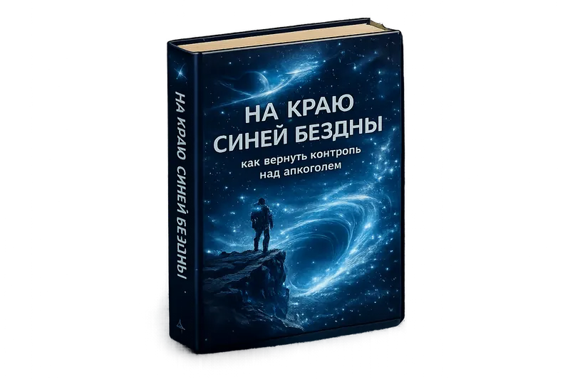

📖 Книга
На краю Синей Бездны
как вернуть контроль над алкоголем
📅 Выход: июнь 2026
·
Практическое руководство по системе КУ

Выход: июнь 2026
Книга о том, как вернуть управляемость употреблению алкоголя без рехабов и докторов. Автор описывает путь от потери контроля к построению системы управления КУ: ясные ограничения, учёт, календарное планирование, тактика на мероприятиях, анализ сбоев и корректировка по данным. В книге есть развилка — когда КУ реалистично, когда погранично, и когда честнее выбрать трезвость. Это практическое руководство для людей, которые уже видят свою проблему, но не готовы идти лечиться или в группы анонимных алкоголиков, поэтому хотят понять, что реально работает.
«Когда б мы праздновали каждый день, то праздник был бы тягостней работы. Но праздник — редкость, праздник — торжество...»
Уильям Шекспир. «Король Генрих IV»
О чём эта книга
Сейчас почти нет книг для тех, кто не хочет становиться трезвенником, но понимает, что его употребление зашло слишком далеко. Всё это пространство занято крайностями: либо «пей, пока не сдохнешь», либо «навсегда брось и иди в АА». Большинство книг о зависимости озвучивают позицию, что алкоголь — абсолютное зло, и только отказ от него спасёт от смерти.
Эта книга показывает третий путь — между полным отрицанием и бесконтрольным потреблением: сознательное, системное, подкреплённое опытом контролируемое употребление. Не эзотерика, не проповедь — а методология, которую автор испробовал на себе за четыре года экспериментов, и которую отшлифовали вместе с участниками форума KUforum.ru.
Для кого эта книга
- вы уже видите свою проблему, но не считаете себя «алкоголиком» в клиническом смысле;
- вы не готовы идти к наркологу или в группы АА;
- вы хотите понять, что реально работает, а не просто «обещать себе пить меньше»;
- у вас аналитический склад ума — вы склонны к самонаблюдению и планированию;
- вы готовы быть активным субъектом самонастройки, а не пассивным объектом лечения.
Полное оглавление книги
Предисловие
История автора, принципы книги, для кого она написана
На краю Синей Бездны — вступление
Метафора воронки зависимости. Кто такой КУшник и где его место в этом мире
Часть 1. Перелом
·Мой путь в КУ — честный личный рассказ автора
·Первое письмо жены автора
·На перепутье — первые эксперименты и осознание
·Понимание — ключ к проблеме
·Мои первые правила
·Второе письмо жены автора
Часть 2. Научный подход
·Безграмотное исполнение убивает идею
·Биопсихосоциальная модель зависимости
·Биологический уровень
·Психологический уровень
·Социальный уровень
·Взаимодействие факторов
·Нейрофизиология зависимости
Часть 3. Семь шагов КУ
·Алгоритм КУ — общая схема
Шаг 1Осознание желания изменить свою жизнь
Шаг 2Оценка вероятности успешного КУ
Шаг 3Разработка плана контроля употребления
Шаг 4Реализация плана и проверка его работоспособности
Шаг 5Оценка успешности плана
Шаг 6Оценка наличия вариантов корректировки
Шаг 7Поддержание стабильного КУ
Часть 4. Большая пятёрка
·Осознанность
·Мотивация
·Тренировка сознания
·Сила воли
·Поддержка
Заключение и Приложения
·Приложение 1. Тест на наличие желания изменить свою жизнь + промпт для ИИ
·Приложение 2. Тест по оценке вероятности успешного КУ + промпт для ИИ
·Приложение 3. Тест на полноту плана контроля употребления
·Приложение 4. Ссылки на электронные ресурсы
·Приложение 5. Практики, сообщества и методы работы с зависимостью
·Приложение 6. Список литературы
Семь шагов КУ — ядро книги
Центральная часть книги — пошаговый алгоритм, который превращает намерение в систему. По этому алгоритму строится система КУ — правила и установки по контролю над алкоголем.
1
Осознание желания изменить свою жизнь
Почему человек хочет измениться. Детская роль и ловушка «хочу без усилий». КУ как способ изменить жизнь к лучшему.
2
Оценка вероятности успешного КУ
Честная развилка перед стартом. Сила зависимости, ограничения, ресурсы. Матрица решений: КУ реалистично / погранично / маловероятно.
3
Разработка плана контроля
Контуры зависимости, триггеры, шаблоны употребления. Календарный уровень планирования. Тактика на мероприятиях. Компромиссы убивают стратегию.
4
Реализация и проверка плана
Учёт и контроль в процессе. Малодозное употребление. Как бороться с тягой — конкретные техники из опыта автора и форумчан.
5
Оценка успешности плана
Измеримые критерии, а не эмоциональные: годовой лимит лча, число нарушений стратегии, наличие и тяжесть негативных последствий.
6
Корректировка стратегии
Как корректировать план по данным. Срыв — не катастрофа, а сигнал. Если способа корректировки нет — честный выбор в пользу трезвости.
7
Поддержание стабильного КУ
Главная работа — не постоянная мобилизация, а профилактика и упреждение триггеров. Система становится надёжнее с каждым циклом. Поддерживающий контур: учёт, заранее прописанные правила, простые решения до того, как появилась непреодолимая тяга.
Ключевая развилка: КУ или трезвость?
Один из самых важных блоков книги — честный ответ на вопрос, который многие боятся задавать себе. Матрицу решений нельзя проходить на эмоциях — её нужно проходить по данным и последствиям.
✅
КУ реалистично
Получается выполнять годовой лимит лча. Нарушения редки и предсказуемы. Негативные последствия минимальны и не накапливаются.
⚠️
Пограничная зона
КУ может работать при жёстких условиях и дополнительных ресурсах поддержки. Требует особой честности с собой.
🛑
Честнее — трезвость
Лимиты регулярно превышаются, любой разовый объём ведёт к потере контроля, последствия затрагивают здоровье, работу, отношения.
«Здесь нет правильного ответа для всех. Есть задача выбрать то, что даёт реальный контроль и снижает ущерб именно для вас.» — из книги
Большая пятёрка — ресурсы устойчивости
Четвёртая часть книги — о пяти ключевых ресурсах, без которых система КУ не держится. Это не абстрактные добродетели, а конкретные навыки, которые можно тренировать.
🎯
Осознанность
Умение замечать триггеры и шаблоны до того, как они сработали автоматически.
🔥
Мотивация
Не «сила воли», а ясность цели. Зачем именно вам нужен контроль над алкоголем.
🧠
Тренировка сознания
Практики, которые укрепляют способность принимать решения в сложных моментах.
💪
Сила воли
Как она работает, почему истощается и как её беречь через правильную архитектуру решений.
🤝
Поддержка
Форум, близкие, сообщество — как выстроить окружение, которое помогает держать систему, а не подрывает её. Форум KUforum.ru стал первым местом, где автор проверял свои методы и собирал опыт других КУшников.
🧑🔬
Об авторе
Участник и основатель KUforum.ru
Физик по первому образованию, экономист по второму, кандидат наук. Не нарколог и не психолог — человек, который столкнулся с проблемой и подошёл к ней аналитически: изучил явление, нашёл методы контроля и разработал систему управления. Четыре года экспериментов и опыт участников форума. Опирается на труды Марка Льюиса, Стэнтона Пила, Келли Макгоникал, Чарльза Дахигга, Джеймса Прохазки, Джеймса Клира и других.
Книга и методика 7 шагов КУ
Книга является расширенным изложением методологии, которая лежит в основе методики 7 шагов КУ → Если вы хотите начать прямо сейчас, до выхода книги, методика даёт ту же структуру в компактном формате — с возможностью обсудить прогресс на форуме.
Обсудите книгу на форуме
Присоединяйтесь к сообществу, где уже сейчас обсуждают методологию КУ, делятся опытом и разбирают сложные ситуации вместе.
Перейти на форум →
← Вернуться на главную